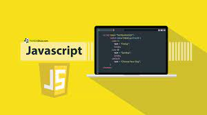

Skill
html

HTML adalah bahasa yang digunakan untuk membuat halaman web. Bagi
yang berkecimpung di dunia perangkat gadget dan ilmu komputer, pasti
sudah tidak asing lagi dengan berbagai kode di dalamnya.
HTML adalah kependekan dari Hypertext Markup Language. Berbeda
dengan orang awam, mungkin hanya sekedar mendengar istilah HTML
semata. Tanpa tahu makna pengertian HTML dan kegunaan sebenarnya.
Terutama maksud di balik kode-kode yang tersusun.
css

CSS adalah singkatan dari cascading style sheets, yaitu bahasa yang
digunakan untuk menentukan tampilan dan format halaman website.
Dengan CSS, Anda bisa mengatur jenis font, warna tulisan, dan latar
belakang halaman.
CSS digunakan bersama dengan bahasa markup, seperti HTML dan XML
untuk membangun sebuah website yang menarik dan memiliki fungsi yang
berjalan baik.
javascript

JavaScript adalah bahasa pemrograman populer yang digunakan untuk
membuat situs dengan konten website yang dinamis. Faktanya, ada
lebih dari 67,7 persen developer yang menggunakan JavaScript, lho!
Konten dinamis artinya konten dapat bergerak atau berubah di depan
layar tanpa perlu mereload halaman. Misalnya saja, fitur slideshow
foto, gambar animasi, pengisian poling, dan lainnya